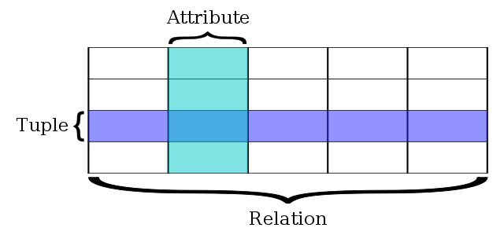

Relational Database (DB)
A relational database is a digital representation of a relational model of data (how information is linked together).
A typical DB stores the organized data into tables (or relations).
In a table, the different columns correspond to the fields (or attribute) of our data
and the rows correspond to the different records (or tuples).

Figure 1. A simple relational database (source: wikipedia).
 Figure 3.
Figure 3.  Figure 11. Venn diagrams of the different types of JOIN (source: dsin.files.wordpress.com).
Figure 11. Venn diagrams of the different types of JOIN (source: dsin.files.wordpress.com).